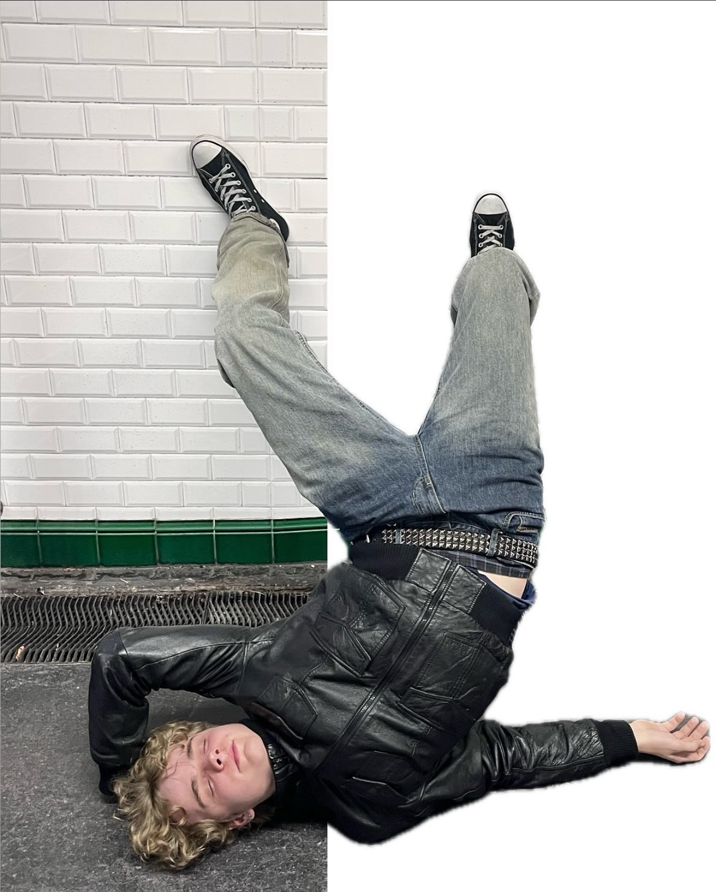
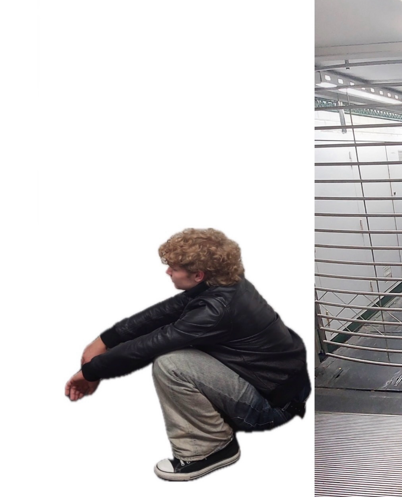
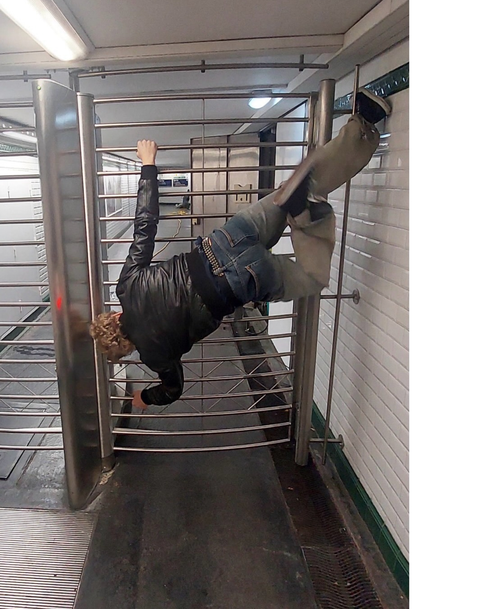

b3nn3t
über mich
diskografie
kontakt
aktuell
gesehen
plattformen
Impressum / Datenschutz
moin und willkommen
bei
b3nn3t
– bock auf browsen... dann los
über mich
Bio & Einblicke

diskografie
Releases & Projekte

kontakt
Booking & Mail
aktuell
News & Termine

gesehen
Inspiration & Notizen
plattformen
Social & Streaming
 b3nn3t
b3nn3t